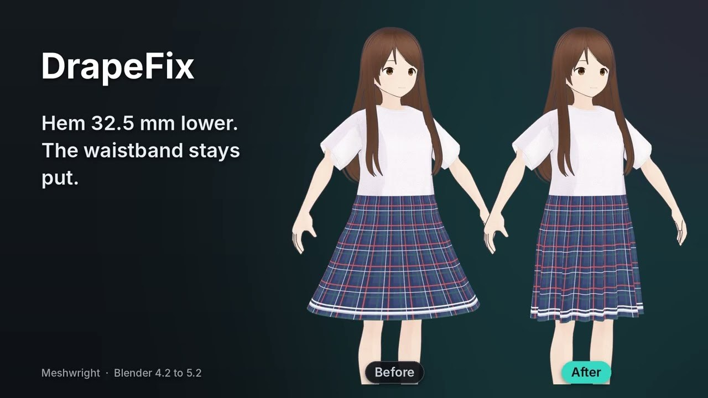

01
Outfit Refit 2.0 與 DrapeFix：分開處理服裝轉移與布料垂墜
Meshwright 的兩款 Blender 外掛面向 VRChat 頭像製作：Outfit Refit 2.0 將服裝適配到其他身體，DrapeFix 再使用 Blender 布料解算器處理垂墜並保留形狀鍵。

角色製作 ★★★★☆
完整分析
服裝轉移先產生各自的副本
Outfit Refit 選取來源身體、目標頭像與服裝後，為每個頭像產生已適配和加權的副本，保留形狀鍵並處理靜止狀態穿插；不需要原始頭像的模式屬於 Pro 版。
解算後形狀成為新的基礎形態
DrapeFix 以 Blender 布料解算器讓裙裝落在身體上，再將結果設為新的 Basis；原文說形狀鍵隨布料調整，而權重、UV 與頂點群組保持不變，承接前一步的服裝適配。
單一示範不能代表所有動作
報導中的 VRoid 示範保留三個形狀鍵、裙襬下降 32.5 毫米，屬於該示範結果，不能推定每套服裝或動畫都不穿插；外掛標示支援 Blender 4.2 至 5.2。
BRIEF｜來源已驗證；證據深度較有限，完整分析會明確區分已知資訊與待驗證事項。